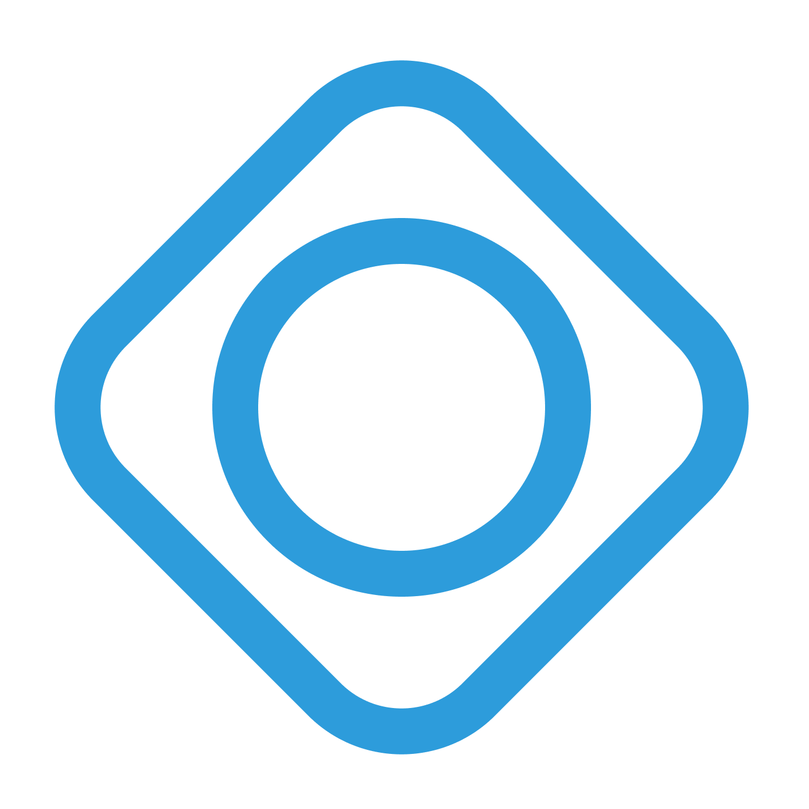
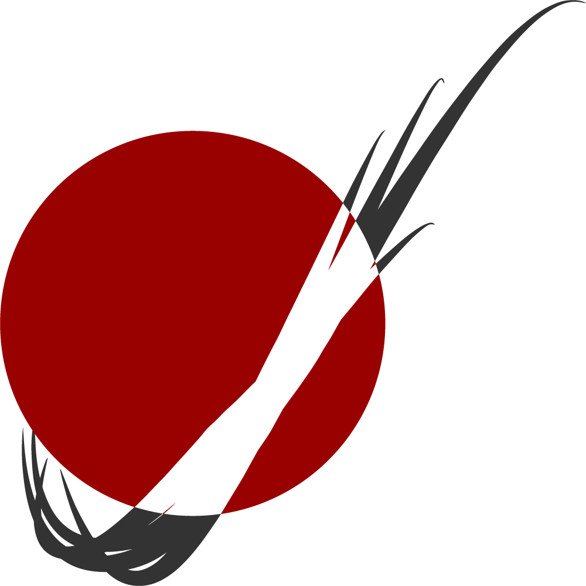

Involvement

ACM Web
Front-End Developer
- Utilized React.js to create front-end features as a team of developers.
- Fixed front-end event date formatting issue on the ACM production site (mstacm.org).
- Learned about virtualization with Docker.

Lambda Chi Alpha
Secretary
- Managed Outlook Calendars, Outlook Groups, and Slack.
- Updated spreadsheets and data of members using Google Sheets and OmegaFi.
- Communicated with all members of the Fraterntiy including all officers and chapter advisors.

Mars Rover Design Team
Autonomous Programmer
- Developed search pattern and navigation algorithms as a member of the autonomy sub team.
- Wrote autonomous rover detection and navigation Python programs that allowed the rover to navigate itself around a detected obstacle.
- Gained experience using Git and Pipenv.